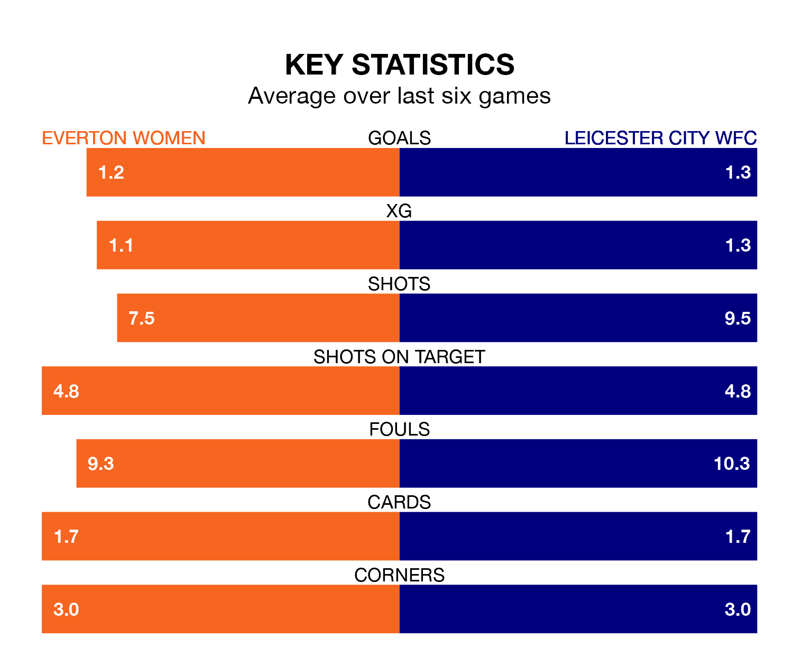

Leicester City WFC travel to Walton Hall Park looking to secure a first win in 10 FA Women's Super League games against Everton Women on Sunday lunchtime.
Leicester City WFC have lost five and drawn four matches since they last earned three points – against Everton Women on October 8.
They face an Everton side who have won three and drawn two over that time.
In the last 10 years, Everton and Leicester City WFC have played each other on eight occasions. Everton won five of them, Leicester City WFC two, and they drew once.
On average, the Toffees scored 1.6 goals and Leicester City WFC 1.1 in those matches.
Their last meeting was on Wednesday, when Leicester City WFC won 5-1 at home.
In Courtney Brosnan, Everton can rely on one of the league's safest pair of hands. She has kept two clean sheets in her nine appearances this season, and only two other 'keepers – Manchester United Women's Mary Earps and Manchester City Women's Khiara Keating – have been able to prevent the opposition scoring on more occasions in FA Women's Super League.
In Leicester City WFC's net, Janina Leitzig has one clean sheet in 11 games. She has conceded a goal every 50 minutes, only slightly more often than the 51 minutes between goals for Brosnan.
The visitors are 10th in the table after 11 games, of which they have won two and drawn four, earning 10 points.
The Toffees are two places ahead of Leicester City WFC in eighth, with three wins and two draws putting them on 11 points.
With 10 goals in 11 games so far this season, the home team are the league's lowest scorers with 0.9 goals per game. And they are conceding more than average, letting in 21 goals at a rate of 1.9 per game.
Leicester City WFC are also below average scorers, with 1.4 goals per game, compared to a league average of 1.7. They have conceded 2.0 goals per game.
Everton's last match was on January 20, a 2-1 loss against Arsenal Women, with Katja Snoeijs getting the goal for the Toffees.
Leicester City WFC lost 1-0 against Aston Villa Women last time out, on January 19.
Updated: 08:51 (UTC), 25/01/24